Independent analysis · Not affiliated with Social Capital Inc.
When a creator post in a Social Capital Inc. launch wave carries media, does that media share a production with the launch's hero film — or not?
No wave video reviewed here is the hero film. Hero films in this sample run 111–172 seconds. Wave videos vary far more widely — from a 5-second GIF to a 52-minute podcast episode — so duration settles particular pairs rather than the sample as a whole. PlayerZero’s hero runs 172 seconds and its closest wave post runs 27, which rules out an unchanged repost of that film.
Two attachments are related to the hero without matching any frame sampled from it. PlayerZero's @TANANY_VC shares the hero's talent, wardrobe, set, subtitle treatment and brand endcard, and its sampled frames show a sequence none of the hero's do. Cartesia's @imamberborse carries the product's own interface inside an independently produced comparison.
Fifteen share no production with the hero. One — a 52-minute episode sampled at two frames — was not reviewed deeply enough to label either way.
This is the closest relationship in the sample, and the reason the label is related rather than same. The durations rule out an unchanged repost; they do not rule out an excerpt. Both frames below carry the same presenter in the same grey shirt on the same set, with matching subtitle styling and the same endcard. None of the five frames sampled from each matches a frame in the other — which is not the same as proving no shared footage exists anywhere in either file.
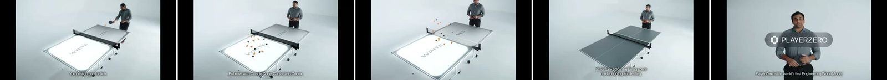
Every media attachment in the sample, with the frames it was judged on. Video is sampled at five evenly spaced frames; photographs are shown whole. Labels were assigned by looking at the media — see Method.
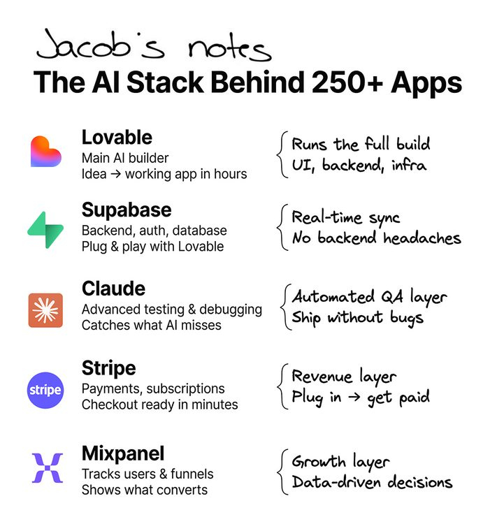
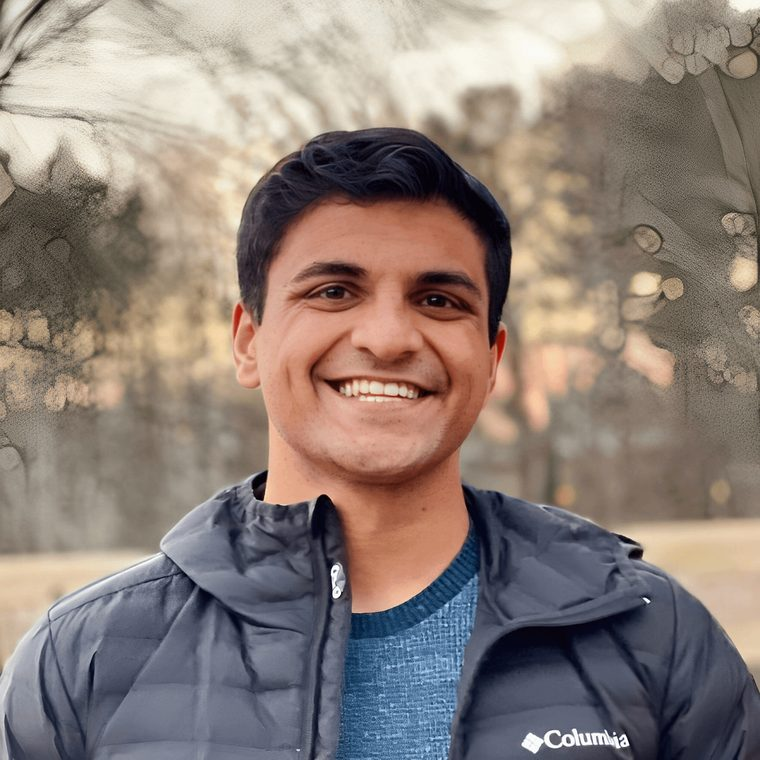
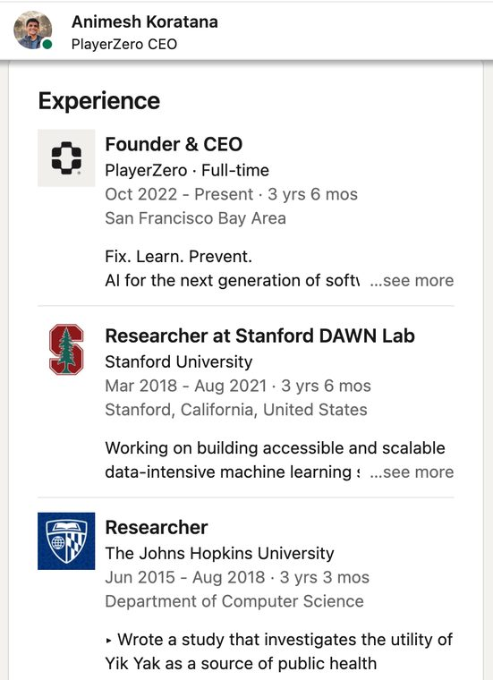
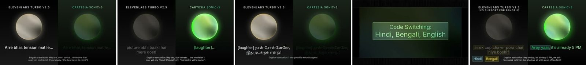
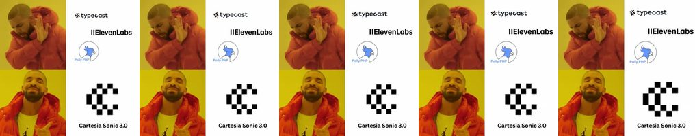
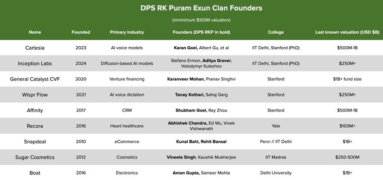
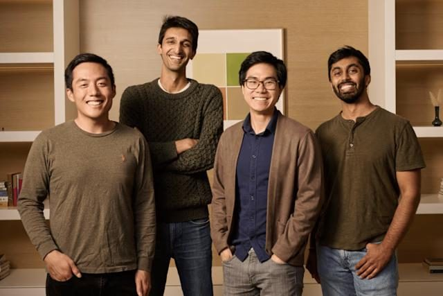
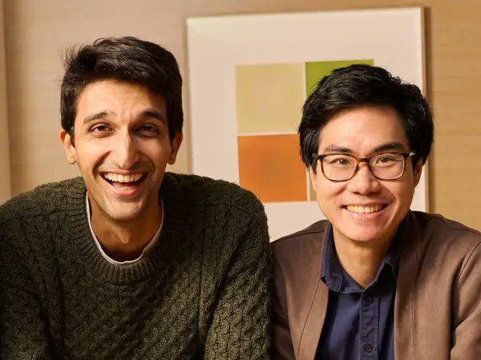
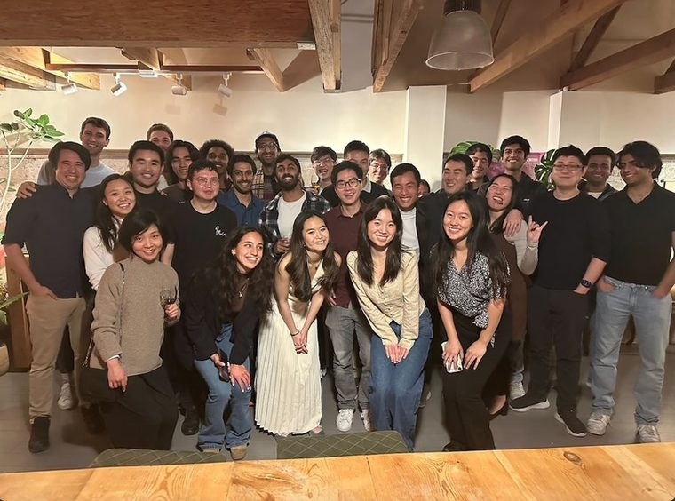
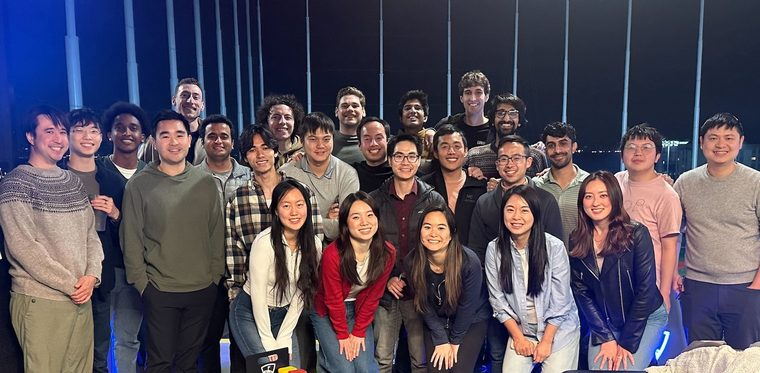
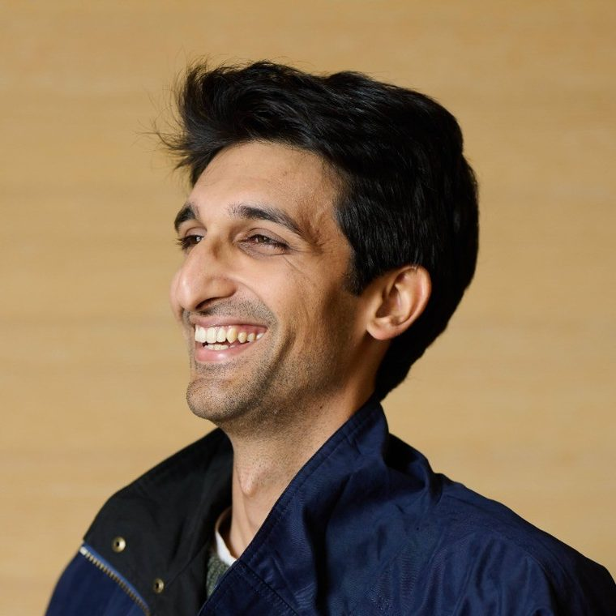
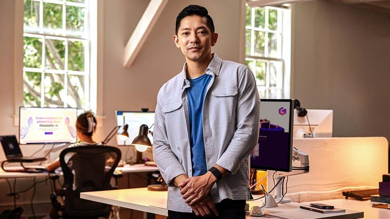
Wave posts were taken from the public catalogue in socap-lens, which indexes 98 wave posts across nine launches. That catalogue records that a post carried media and its type, but stores no media URLs. The files themselves were recovered per post from the public fxtwitter JSON endpoint — 18 of 18 attachments resolved for these three launches — then each video was downloaded under its post ID and sampled at five evenly spaced frames with ffmpeg. One exception is recorded on the page: a 52-minute episode downloaded only partially, and is sampled at two frames.
The obvious shortcut is to compare thumbnails numerically and call a low score a match. That was tried first, and it does not work. Normalised mean pixel difference, 256×256, letterbox auto-cropped:
| Pair | Score | Numeric reading | On review |
|---|---|---|---|
| PlayerZero hero vs @TANANY_VC | 0.0869 | possible | Related |
| @Vinay_bharambe vs @Bharambe2Kiran | 0.2979 | different | Same room, same occasion |
| Gamma hero vs @a16z | 0.2773 | different | Different production |
Both the first and second pairs are genuinely related, and the metric separates them by a factor of three. A thumbnail is one frame at an arbitrary timestamp, so the comparison cannot settle video identity in either direction. The scores are reported here as the reason human review was necessary — not as a result. Every label on this page was assigned by looking at the frames shown beside it.